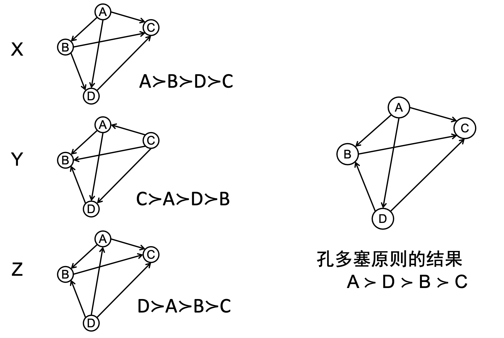
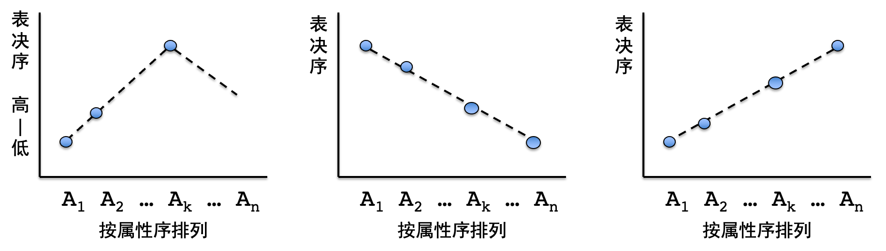

<< 返回本书主页<< Back to the afterword page
Jan. 2022
在一个共同体里，人们观点相异极为常见。在异见的基础上决议或得出“集体意见”，表决是一种重要方式。
表决有几种经典设计。一个代表是孔多塞原则：
这一过程可以用有向图来表示，下图是依据孔多塞原则表决的一个例子：

在集体全排序中，边
这一表决原则的问题在于，可能会出现孔多塞悖论。假设三个人甲、乙、丙要对三个候选项A、B、C投票，
最终的结果：
以下两种方法可以用来解决孔多塞悖论，保证找出胜者：
完美的表决方式似乎很难找到。阿罗在1950年提出了阿罗不可能定理：不存在同时满足以下三条公理的表决聚合规则，
也就是说，任何一种表决规则至少违反以上三条公理之一。那么，是否存在对投票人的个人序做某种合理要求，能够克服阿罗不可能定理指出的困难呢？课堂上引入了一个新的标准——属性序——用以判断投票者是否足够理性，不理性的投票者的意见不予考虑。只考虑理性投票者似乎确实合理，这一方法也成功解决了孔多塞悖论。
在现实生活中，事物的性质往往能够按顺序排列，例如，候选项是建筑预算时，我们可以按照数额从大到小排列。对于这类事物，理性的投票行为应当符合单峰性质。例如，如果一个人对高、中、低三种建筑预算的排序是
单峰偏好的定义如下：
单峰性质可能呈现为以下三种形态。

删去不理性的个体后，我们可以用中位项定理得出孔多塞全排序结果：给定满足单峰性质的
这样操作的凭依就是排序的单峰性。设
根据“少数服从多数”原则，中位项定理找出的
这样操作第一次，设孔多塞胜者为
本次作业就是模拟表决过程，给出表决结果。如果投票人的个人排序中不存在孔多塞悖论，就按照孔多塞原则确定群体排序；如果存在，就删去非理性投票者，按照中位项定理一个个确定胜者。
设有
如果
如果有悖论：
这一算法有三个重点：
孔多塞悖论的判定标准：关键在于结果序中是否存在有向环。如果存在有向环，这一表决就有孔多塞悖论。根据第九讲里有向图的性质，如果一个有穷有向图中不存在有向环，则该图中既存在出度为0的节点，也存在入度为0的节点。尝试不断删除入度为0的节点。当且仅当找不到入度为0的节点、但还没有删除完所有节点，该图就存在有向环。
孔多塞排序：
检查个体偏好序是否符合单峰性质：找出投票人最为偏好的候选项
首先，打开用户指定的数据文件，读取所有投票者的投票结果，存储在一个numpy 2d-array votes里。代码略，参见1.2.1.2。一个数据文件的例子如下：
xxxxxxxxxx151>>> 输入文件名：b42>>> 投票结果：3>>> [[9 8 7 6 5 4 3 2 1 0]4>>> [2 3 1 4 5 6 0 7 8 9]5>>> [7 6 5 8 4 3 2 1 0 9]6>>> [3 4 2 5 6 1 7 0 8 9]7>>> [6 7 5 4 3 2 1 8 0 9]8>>> [2 1 3 0 4 5 6 7 8 9]9>>> [0 1 2 3 4 5 6 7 8 9]10>>> [3 4 5 2 1 6 7 0 8 9]11>>> [3 0 9 7 6 8 1 5 4 2]12>>> [9 7 5 8 1 3 2 0 4 6]13>>> [3 6 1 7 2 9 8 0 4 5]14>>> [2 9 0 6 8 3 1 5 7 4]15>>> [8 7 1 2 3 4 9 6 5 0]]
定义一个函数compare，用以比较两个候选项中哪个候选项得到了多数人的支持。advantage大于0，i比j得到了更多人支持。
xxxxxxxxxx131def compare(i,j,votes): 2 n = len(votes) # number of voters3 advantage = 0 # accumulative advantage of i over j according to all voters4 i_indices = np.where(votes == i)5 j_indices = np.where(votes == j)6 for k in range(n):7 i_index = i_indices[1][k]8 j_index = j_indices[1][k]9 if i_index < j_index: # i ranks higher than j, according to voter k10 advantage += 111 else:12 advantage -= 113 return advantage定义函数condorcet，根据孔多塞定理，得到集体序order。
xxxxxxxxxx51def condorcet(votes):2 n = len(votes) # number of voters3 assert n % 2 == 1 # make sure there are an odd number of voters4 m = len(votes[0]) # number of candidates5 order = [0]我这里使用的是冒泡排序法。对于尚未加入集体序的元素i，把它同该序列中的元素一一比较大小，从最后一名开始比。直到找到比i更受欢迎的元素j，把i插在j后面。
xxxxxxxxxx91 for i in range(1, m):2 for j_index in range(len(order)):3 flag = False4 j = order[len(order) - j_index - 1]5 advantage = compare(i, j, votes)6 if advantage < 0:7 order.insert(j_index+1, i)8 flag = True9 break如果没有找到比i更受欢迎的元素j，这意味着i是目前为止得票最多的候选项，把它放在第一位。
xxxxxxxxxx31 if flag == False:2 order.insert(0, i)3 return order定义函数condorcet_paradox_check，检查投票结果是否隐含孔多塞悖论。这一函数的内部结构略微有些复杂，我定义了两个局部函数：preference_matrix_generator、most_preferred_deleter。在函数condorcet_paradox_check内部的主程序中，我先调用preference_matrix_generator，生成孔多塞有向图，在对这一有向图迭代调用most_preferred_deleter，不断删除入度为0的节点，来判断孔多塞悖论是否存在。
xxxxxxxxxx31def condorcet_paradox_check(votes):2 m = len(votes[0])3 n = len(votes)函数preference_matrix_generator根据投票结果votes生成孔多塞排序有向图preference_matrix，这一过程主要依靠迭代调用compare函数完成。preference_matrix[i][j] = 1表示preference_matrix[i][j] = -1表示
xxxxxxxxxx161 def preference_matrix_generator(votes): 2 preference_matrix = np.zeros((m,m))3 assert n % 2 == 14 for i in range(m-1):5 for j in range(i+1,m):6 advantage = compare(i, j, votes)7 if advantage > 0: # i is more preferred than j8 preference_matrix[i][j] = 19 preference_matrix[j][i] = -110 else:11 preference_matrix[i][j] = -112 preference_matrix[j][i] = 113 return preference_matrix14 preference_matrix = preference_matrix_generator(votes)15 print('孔多塞排序有向图（初始）：')16 print(preference_matrix)xxxxxxxxxx111>>> 孔多塞排序有向图（初始）：2>>> [[ 0. -1. -1. -1. -1. -1. -1. -1. 1. 1.]3>>> [ 1. 0. -1. -1. 1. 1. -1. 1. 1. 1.]4>>> [ 1. 1. 0. -1. 1. 1. 1. -1. 1. 1.]5>>> [ 1. 1. 1. 0. 1. 1. 1. 1. 1. 1.]6>>> [ 1. -1. -1. -1. 0. 1. 1. -1. -1. 1.]7>>> [ 1. -1. -1. -1. -1. 0. -1. -1. 1. 1.]8>>> [ 1. 1. -1. -1. -1. 1. 0. 1. 1. 1.]9>>> [ 1. -1. 1. -1. 1. 1. -1. 0. 1. 1.]10>>> [-1. -1. -1. -1. 1. -1. -1. -1. 0. 1.]11>>> [-1. -1. -1. -1. -1. -1. -1. -1. -1. 0.]]
接下来的任务是判断这一有向图是否存在有向环。函数most_preferred_deleter用以检查有向图中是否存在入度为0的点，如果存在，就删除它。返回该有向图是否存在入度为0的点的bool值deleter_bool，和删除入度为0的点后的有向图preference_matrix。
xxxxxxxxxx151 def most_preferred_deleter(preference_matrix):2 deleter_bool = False # whether there is indeed a node to be deleted3 for i in range(len(preference_matrix)):4 preference_individual = preference_matrix[i]5 flag = True6 for item in preference_individual:7 if item < 0:8 flag = False9 break10 if flag == True:11 deleter_bool = True12 preference_matrix = np.delete(preference_matrix, i, 0)13 preference_matrix = np.delete(preference_matrix, i, 1)14 break # There's no possibility that a given matrix has two nodes whose entry degrees are 0 at the same time15 return preference_matrix, deleter_bool循环调用most_preferred_deleter函数，直到无节点可删。此时，如果所有节点都删除掉了，有向图中不存在环，孔多塞悖论不存在；反之则存在孔多塞悖论。
xxxxxxxxxx121 while True:2 preference_matrix, deleter_bool = most_preferred_deleter(preference_matrix)3 # print(preference_matrix)4 if deleter_bool == False: 5 break # break when there is no node to be deleted6 if len(preference_matrix) == 0:7 paradox_bool = False8 print('不存在孔多塞悖论。')9 else:10 paradox_bool = True11 print('存在孔多塞悖论。')12 return paradox_bool如果孔多塞悖论存在，我们需要检查个体序是否符合单峰性质，删除非理性的投票者。我的程序中完成这一任务的是函数irrational_voters_deleter。我定义了两个局部函数monotonic_check和single_peak_check，后者需要调用前者。在irrational_voters_deleter的主程序中，我一一检查每个节点，调用single_peak_check，检查它们是否具有单峰性，删除不具有单峰性的节点。
xxxxxxxxxx11def irrational_voters_deleter(votes):先定义一个函数monotonic_check，检查字典的值value是否随着键key单调变化。输入：
order_dict变量：值是某一候选项的属性位次，键是它的个体偏好位次；right_or_left（字符串）：order_dict里的候选项在单峰的左侧还是右侧。单峰左侧的候选项，偏好位次随着属性位次单减，返回mononotic_bool=True，否则返回mononotic_bool=False；单峰右侧的候选项，偏好位次随着属性位次单增，返回mononotic_bool=True，否则返回mononotic_bool=False。
xxxxxxxxxx31 def monotonic_check(order_dict, right_or_left): 2 # order_dict -- candidate : order3 monotonic_bool = True首先把字典的键和值分别按照从小到大排序，得到keys和values。
xxxxxxxxxx41 keys = list(order_dict.keys())2 keys.sort()3 values = list(order_dict.values())4 values.sort()考虑处于keys第i位的key。如果单调递增，处于values第i位value应当恰好等于order_dict[key]；如果单调递减，处于values从队末开始数第i位（从队首开始数第values_len - i - 1）的value应当恰好等于order_dict[key]。
xxxxxxxxxx131 for i in range(len(keys)):2 key = keys[i]3 values_len = len(values)4 if right_or_left == 'right': 5 value = values[i]6 elif right_or_left == 'left': 7 value = values[values_len - i - 1]8 else:9 raise Exception('The argument “right_or_left” for function *monotonic_check* need a string variable which is either "right" or "left".')10 if order_dict[key] != value: 11 monotonic_bool = False12 break13 return monotonic_bool在检查单峰性的函数single_peak_check中，我们只需要确定最受偏好的候选项most_preferred，把它左侧的候选项存入字典leftwing中，右侧的候选项存入rightwing中，再分别调用monotonic_check即可。返回rightwing_bool and leftwing_bool：左右候选项同时通过单调测试，这一投票者的偏好序就具有单峰性。
xxxxxxxxxx141 def single_peak_check(votes_individual): 2 most_preferred = votes_individual[0]3 rightwing = {} # votes on those candidates whose attributive order is higher than the most preferred one4 leftwing = {} # votes on those candidates whose attributive order is lower than the most preferred one5 for i in range(most_preferred + 1, m):6 i_index = np.where(votes_individual == i)7 rightwing[i] = i_index[0][0]8 for i in range(0, most_preferred):9 i_index = np.where(votes_individual == i)10 leftwing[i] = i_index[0][0]11 # The voter's behavior satisfies single-peak attribute, when both the left wing and the right wing are monotonic12 rightwing_bool = monotonic_check(rightwing, 'right')13 leftwing_bool = monotonic_check(leftwing, 'left')14 return rightwing_bool and leftwing_bool一一检查有向图中的节点，输出不理性的投票者。
xxxxxxxxxx91 m = len(votes[0])2 irrational_voters = []3 for i in range(len(votes)):4 votes_individual = votes[i]5 single_peak_bool = single_peak_check(votes_individual)6 if single_peak_bool == False:7 irrational_voters.append(i)8 print('违反单峰性质的voters序号（初始矩阵行号）：', end = '')9 print(irrational_voters)xxxxxxxxxx11>>> 违反单峰性质的voters序号（初始矩阵行号）：[8, 9, 10, 11, 12]
删除非理性投票者，生成新的有向图矩阵。
xxxxxxxxxx141 ## generate a new matrix which excludes the irrational voters2 n = len(votes)3 cnt = 04 for i in range(n):5 if i in irrational_voters:6 continue7 if cnt == 0:8 votes_new = votes[i]9 votes_new = np.reshape(votes_new, (-1, m)) # 1d to 2d (in order to concatenate into a 2-d array)10 else:11 votes_appended = votes[i]12 votes_appended = np.reshape(votes_appended, (-1, m))13 votes_new = np.concatenate((votes_new, votes_appended), axis = 0)14 cnt += 1检查投票者是否为奇数个。如果不是，补齐一个一个投票者，其偏好序为属性序。
xxxxxxxxxx81 if len(votes_new) % 2 == 0:2 print('删除非理性投票者后，总人数不为奇数，补齐一个投票者，其偏好序为属性序。')3 votes_default = np.array([[0,1,2,3,4,5,6,7,8,9]])4 votes_new = np.concatenate((votes_new, votes_default), axis = 0)5 print('删除非理性投票者后的矩阵为：')6 print(votes_new)7 8 return votes_newxxxxxxxxxx101>>> 删除非理性投票者后的矩阵为：2>>> [[9 8 7 6 5 4 3 2 1 0]3>>> [2 3 1 4 5 6 0 7 8 9]4>>> [7 6 5 8 4 3 2 1 0 9]5>>> [3 4 2 5 6 1 7 0 8 9]6>>> [6 7 5 4 3 2 1 8 0 9]7>>> [2 1 3 0 4 5 6 7 8 9]8>>> [0 1 2 3 4 5 6 7 8 9]9>>> [3 4 5 2 1 6 7 0 8 9]10>>> [0 1 2 3 4 5 6 7 8 9]]
对于理性投票者集合，我们采用中位项定理排序。先定义函数median_identifier，给定一组投票结果votes，集合每一投票者最偏好的候选项most_preferred_choices，找出其中的中位项i，这就是当前votes中的孔多塞胜者。
xxxxxxxxxx61def median_identifier(votes):2 candidates_num = len(votes[0])3 n = len(votes)4 most_preferred_choices = [] 5 for votes_individual in votes:6 most_preferred_choices.append(votes_individual[0])为了找出中位项，我调用了numpy的unique方法，得到一个字典occurences，其中记录了每一候选项成为最受偏好者的次数（被多少人选为了最佳）。
xxxxxxxxxx31 most_preferred_choices_array = np.array(most_preferred_choices)2 unique, counts = np.unique(most_preferred_choices_array, return_counts=True)3 occurences = dict(zip(unique, counts))按照属性序从小到大加总每一候选项的出现次数，总和存储在变量accumulation里。当accumulation >= (n+1) // 2时，终止循环，此时的i值即为中间项。
xxxxxxxxxx91 accumulation = 02 for i in range(candidates_num): 3 if i not in occurences.keys():4 continue5 accumulation += occurences[i]6 if accumulation >= (n+1) // 2:7 break 8 print(i, end = ', ')9 return i以下为主程序。
首先调用condorcet_paradox_check，检查投票结果是否存在孔多塞悖论。
xxxxxxxxxx11paradox_bool = condorcet_paradox_check(votes)如果不存在孔多塞悖论，就调用condorcet，按照孔多塞原则排序。
xxxxxxxxxx41if paradox_bool == False:2 condorcet_order = condorcet(votes)3 print('根据孔多塞定理，全排序如下：', end = '')4 print(condorcet_order)否则就调用irrational_voters_deleter，删除非理性投票者，得到votes_new。
xxxxxxxxxx21else:2 votes_new = irrational_voters_deleter(votes)接着调用median_identifier，按照中位项定理确定当前的孔多塞胜者median_choice，然后在投票结果votes_new中删去这一候选项。迭代操作，直到所有候选项都被排到集体序中。
xxxxxxxxxx81 print('根据中位项定理，全排序如下：', end = '')2 while True:3 median_choice = median_identifier(votes_new)4 if len(votes_new[0]) == 1:5 break6 m = len(votes_new[0]) - 17 votes_new = votes_new[votes_new != median_choice]8 votes_new = np.reshape(votes_new, (-1, m))xxxxxxxxxx11>>> 根据中位项定理，全排序如下：3, 4, 2, 5, 1, 6, 7, 0, 8, 9,
上面的数据例子存在孔多塞悖论。以下是一个不存在孔多塞悖论的数据例子：
xxxxxxxxxx171>>> 输入文件名：b22>>> 投票结果：3>>> [[4 3 2 1 0]4>>> [3 2 1 0 4]5>>> [1 0 2 3 4]6>>> [4 1 0 3 2]7>>> [1 3 2 0 4]8>>> [4 2 3 1 0]9>>> [4 2 0 3 1]]10>>> 孔多塞排序有向图（初始）：11>>> [[ 0. -1. -1. -1. -1.]12>>> [ 1. 0. -1. -1. -1.]13>>> [ 1. 1. 0. -1. -1.]14>>> [ 1. 1. 1. 0. -1.]15>>> [ 1. 1. 1. 1. 0.]]16>>> 不存在孔多塞悖论。17>>> 根据孔多塞定理，全排序如下：[4, 3, 2, 1, 0]